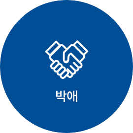

교육수련부
호스피스 / 완화의료 전문가들과 함께 환자와 가족의 삶의 질을 향상시켜드립니다 .
최적의 교육수련 환경을 통해 미래 보건의료복지 선도.
-

환자와 사회의 신뢰를 바탕으로
최선의 진료역량을 갖춘다. -
환자, 보호자, 의료진 그리고
사회와 상호 소통하고 협력한다. -
환자의 건강과 사회의 안녕을 위해
봉사하고 보건의료체계 유지와 발전에 기여한다. -
전문적인 직무 규범과 자율 규제를
바탕으로 높은 수준의 직무 윤리를 유지한다. -
과학적 탐구정신을 갖고 최근 의학 지견을
개발, 습득하고 이를 업무에 적용하여
그 결과를 비판적으로 평가할 수 있어야 한다.
박애 · 봉사 · 애국의 건립이념을 바탕으로 의료인의 전문적 자질을 갖추고,
사회가 필요로 하며, 의학발전에 기여하는 의사를 양성한다.
-

그늘진 곳, 소외된 삶들을 보살핍니다.
보증금 없는 병원, 새생명 찾아주기 운동
해외 심장병 어린이 무료수술, 의료 취약지 병원 운영 등으로 어려운 환경의 위태로운 생명을 사랑으로 돌봅니다. 낮은데, 외딴 삶들을 외면하지 않는 것이
길병원 정신입니다. -
 손을 비워서 마음을 채우면 행복합니다.
손을 비워서 마음을 채우면 행복합니다.
봉사와 나눔이야말로 선진사회의 '소금'입니다.
가천미추홀청소년봉사단의 씩씩한 기상. '심청효행대상'에 빛나는 고결한 효성은 세상을
밝히는 마음의 등불입니다. 가천문화재단과
가천박물관이 베푸는 문화 나눔이 훈훈하고
격조 높은 21세기 문화 코리아를 열어갑니다. -
 인재양성이 나라사랑의 시작이자 끝입니다.
인재양성이 나라사랑의 시작이자 끝입니다.
사람이 바로 그 공동체의 미래입니다.
글로벌 리더를 배출하고, 의료인재를 가꾸어 내는 꿈이 가천대학교의 글로벌, 메디컬
이 두 캠퍼스에 담겨있습니다. 기초과학을 연구하는 '가천뇌과학연구원', '이길여 암·당뇨연구원'은
21세기 초일류 코리아의 디딤돌입니다.